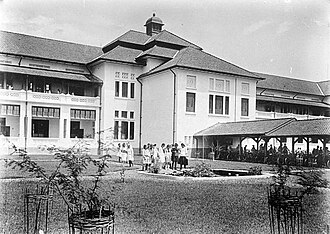
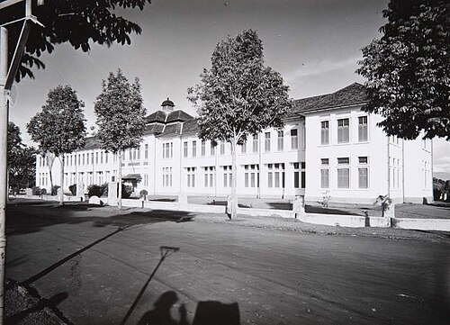

Bandung
SEJARAH SMA NEGERI 3 BANDUNG
Vol. #1 | Sejarah SMAN 3 Bandung | 18/10/2025 20:15 WIB
Dari Wikipedia bahasa Indonesia, ensiklopedia bebas
SMA Negeri 3 Bandung atau yang disingkat dengan SMAN 3 Bandung, merupakan salah satu Sekolah Menengah Atas Negeri yang ada di Provinsi Jawa Barat, Indonesia.[3] Sama dengan SMA pada umumnya di Indonesia masa pendidikan sekolah di SMAN 3 Bandung ditempuh dalam waktu tiga tahun pelajaran. Didirikan pada tahun 1953, di mana sebelumnya bernama SMA B (1952), dan sebelumnya lagi bernama SMA 1 B/C (1950).
Pada tahun 2007, sekolah ini menggunakan Kurikulum Tingkat Satuan Pendidikan sebelumnya dengan KBK. Mulai tahun 2013, sekolah ini menggunakan Kurikulum 2013. Beberapa tahun belakangan, sekolah ini mencoba untuk menggunakan sistem kredit semester (SKS) yang telah disempurnakan untuk memenuhi kebutuhan yang diperlukan.

Sejarah Sekolah
Berdiri sejak tahun 1953, SMA Negeri 3 Bandung dikenal dengan sebutan SMA Belitung Barat karena berlokasi di Jalan Belitung No. 8 Bandung dan menempati sebelah barat gedung tersebut. Sekolah ini merupakan SMA Negeri unggulan pertama di Bandung, kemudian SMA Negeri 8 Bandung dan SMA Negeri 5 Bandung menempati urutan 2 dan 3. Lulusan dari sekolah ini banyak yang berhasil melanjutkan ke perguruan tinggi terkemuka di Indonesia.
Sumber: Wikipedia